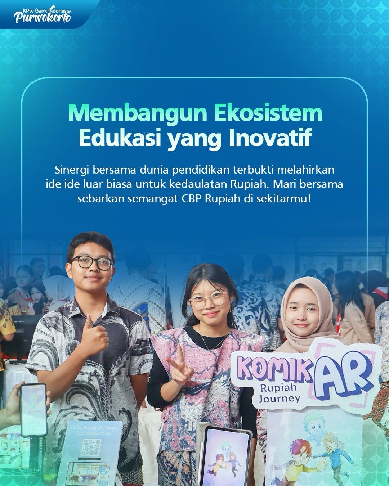
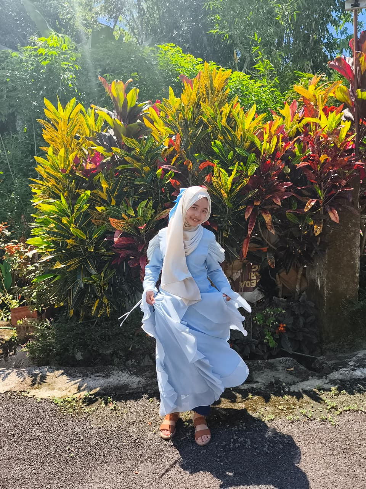

Branding
2026
Komik AR Rupiah Journey
Visual edukasi yang menghadirkan cerita, emosi, dan interaksi.
Graphic Designer & Video Editor
“Merangkai warna menjadi cerita, mengubah ide menjadi visual yang berbicara.”
Seorang Graphic Designer dan Video Editor yang percaya bahwa setiap karya memiliki jiwa. Melalui desain, saya menciptakan pengalaman visual yang tidak hanya dilihat, tetapi juga dirasakan.
Tentang Saya

Perjalanan kreatif saya dimulai dari rasa penasaran terhadap seni dan visual. Seiring waktu, ketertarikan itu tumbuh menjadi passion yang membawa saya mendalami dunia desain grafis dan editing. Saat ini saya mengembangkan kemampuan tersebut di SMK Telkom Purwokerto, menjadikan setiap proses belajar sebagai langkah untuk menciptakan karya yang bermakna.
Jenjang & Pengalaman
Awal rasa penasaran terhadap gambar, warna, dan bentuk.
Mulai mengenal software desain dasar dan dunia editing digital.
Memperdalam desain grafis, video editing, branding, dan visual storytelling.
Mulai belajar desain sederhana, editing video ringan, dan eksperimen visual.
Latihan poster, branding sederhana, content visual, dan memahami komposisi warna.
Membuat visual promosi, mockup, dan motion sederhana untuk kebutuhan digital.
Mengembangkan karya yang lebih terarah untuk branding, media sosial, dan proyek visual berkesan.
Karya Pilihan

Visual edukasi yang menghadirkan cerita, emosi, dan interaksi.
Komunikasi visual yang memadukan estetik dan pesan kuat.
Membuat konten yang tidak hanya indah, tetapi juga strategis.
Merancang pengalaman yang memadukan fungsi dan emosi.
Memindahkan momen menjadi cerita yang berjalan dengan ritme.
Filosofi Berkarya
“Saya percaya bahwa desain bukan hanya tentang membuat sesuatu terlihat indah. Desain adalah bahasa yang menyampaikan gagasan, emosi, dan identitas. Setiap garis, warna, dan komposisi memiliki alasan untuk hadir dan meninggalkan kesan.”
Skill
Mari Berkarya Bersama
Jika kamu memiliki visi yang ingin divisualisasikan, mari kita ciptakan sesuatu yang berkesan bersama.